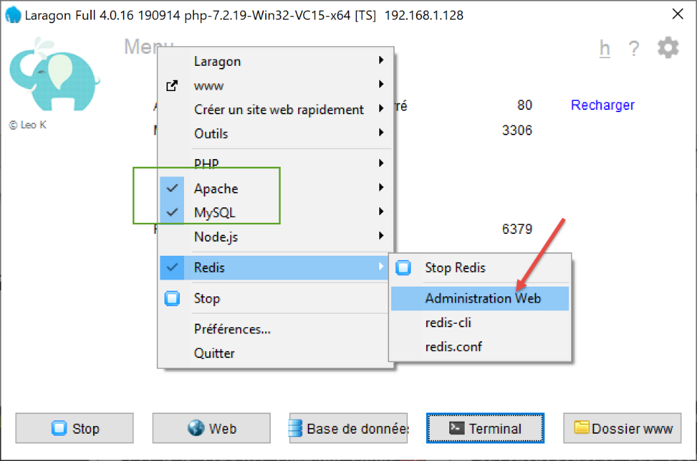
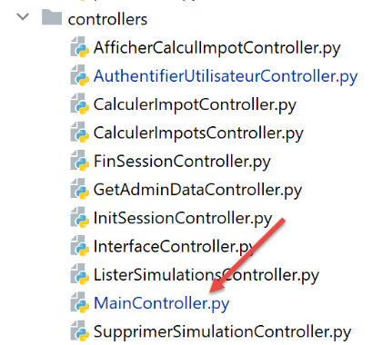
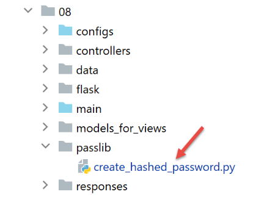

33. 应用练习：第13版
版本 13 在以下方面对版本 12 进行了修改：
- 对部分代码进行了重构（refactoring）；
- 通过模块 [flask_session] 以不同方式管理会话；
- 在配置文件中使用加密密码；
版本 13 最初是通过复制版本 12 获得的：


- 在 [1] 中，将对配置进行重构。特别是将其从 [flask] 文件夹中移出；
- 在 [2] 中，主脚本将进行重构。同时将其从 [flask] 文件夹中移出；
- 在 [3] 中，配置将被拆分为多个文件；
- 在 [4] 中：我们将通过将代码移至其他文件，简化主脚本 [main]；
- 在 [5] 中，认证控制器将被修改，因为用户密码现在将进行加密；
- 在 [6] 中，主控制器将整合此前位于主脚本 [main] 中的代码；
33.1. 应用程序配置的重构

将出现三个新的配置文件：
- [mvc]：用于配置应用程序的 MVC 架构；
- [parameters]：用于汇总应用程序的所有常量；
- [syspath]：用于配置应用程序的 Python 路径；
文件 [syspath.py] 内容如下：
def configure(config: dict) -> dict:
import os
# 该文件的目录
script_dir = os.path.dirname(os.path.abspath(__file__))
# 根路径
root_dir = "C:/Data/st-2020/dev/python/cours-2020/python3-flask-2020"
# 依赖项
absolute_dependencies = [
# 项目文件夹
# BaseEntity, MyException
f"{root_dir}/classes/02/entities",
# InterfaceImpôtsDao, InterfaceImpôtsMétier, InterfaceImpôtsUi
f"{root_dir}/impots/v04/interfaces",
# AbstractImpôtsdao, ImpôtsConsole, ImpôtsMétier
f"{root_dir}/impots/v04/services",
# ImpotsDaoWithAdminDataInDatabase
f"{root_dir}/impots/v05/services",
# AdminData, ImpôtsError, TaxPayer
f"{root_dir}/impots/v04/entities",
# 常量、区间
f"{root_dir}/impots/v05/entities",
# 记录器，SendAdminMail
f"{root_dir}/impots/http-servers/02/utilities",
# 主脚本文件夹
script_dir,
# 配置[database, layers, parameters, controllers, views]
f"{script_dir}/../configs",
# 控制器
f"{script_dir}/../controllers",
# 答案HTTP
f"{script_dir}/../responses",
# 视图模板
f"{script_dir}/../models_for_views",
]
# 设置 syspath
from myutils import set_syspath
set_syspath(absolute_dependencies)
# 生成配置
return {
"root_dir": root_dir,
"script_dir": script_dir
}
- 脚本 [syspath] 用于配置应用程序的 Python 路径（第 40-41 行）；
- 它为其他配置脚本提供了两项有用信息（第45-46行）；
脚本 [mvc] 用于配置 Web 应用程序 MVC / jSON / XML / HTML 的架构：
def configure(config: dict) -> dict:
# 应用程序配置MVC
# 控制器
from AfficherCalculImpotController import AfficherCalculImpotController
from AuthentifierUtilisateurController import AuthentifierUtilisateurController
from CalculerImpotController import CalculerImpotController
from CalculerImpotsController import CalculerImpotsController
from FinSessionController import FinSessionController
from GetAdminDataController import GetAdminDataController
from InitSessionController import InitSessionController
from ListerSimulationsController import ListerSimulationsController
from MainController import MainController
from SupprimerSimulationController import SupprimerSimulationController
# 响应HTTP
from HtmlResponse import HtmlResponse
from JsonResponse import JsonResponse
from XmlResponse import XmlResponse
# 视图模板
from ModelForAuthentificationView import ModelForAuthentificationView
from ModelForCalculImpotView import ModelForCalculImpotView
from ModelForErreursView import ModelForErreursView
from ModelForListeSimulationsView import ModelForListeSimulationsView
# 允许的操作及其控制器
controllers = {
# 计算会话的初始化
"init-session": InitSessionController(),
# 用户身份验证
"authentifier-utilisateur": AuthentifierUtilisateurController(),
# 个人模式下的税款计算
"calculer-impot": CalculerImpotController(),
# 批量模式下的税款计算
"calculer-impots": CalculerImpotsController(),
# 模拟列表
"lister-simulations": ListerSimulationsController(),
# 删除模拟
"supprimer-simulation": SupprimerSimulationController(),
# 结束计算会话
"fin-session": FinSessionController(),
# 显示税款计算视图
"afficher-calcul-impot": AfficherCalculImpotController(),
# 获取税务部门数据
"get-admindata": GetAdminDataController(),
# 主控制器
"main-controller": MainController()
}
# 各种响应类型（json、xml、html）
responses = {
"json": JsonResponse(),
"html": HtmlResponse(),
"xml": XmlResponse()
}
# 视图 HTML 及其模板取决于控制器返回的状态
views = [
{
# 身份验证视图
"états": [
700, # /init-session - 成功
201, # /用户认证 - 失败
],
"view_name": "views/vue-authentification.html",
"model_for_view": ModelForAuthentificationView()
},
{
# 税款计算视图
"états": [
200, # /用户认证 成功
300, # /计算-税款 成功
301, # /计算-税款 失败
800, # /显示-税款计算 成功
],
"view_name": "views/vue-calcul-impot.html",
"model_for_view": ModelForCalculImpotView()
},
{
# 模拟列表视图
"états": [
500, # /列出模拟 成功
600, # /删除模拟 成功
],
"view_name": "views/vue-liste-simulations.html",
"model_for_view": ModelForListeSimulationsView()
},
]
# 意外错误视图
view_erreurs = {
"view_name": "views/vue-erreurs.html",
"model_for_view": ModelForErreursView()
}
# 重定向
redirections = [
{
"états": [
400, # /结束会话 成功
],
# 重定向至 URL
"to": "/init-session/html",
}
]
# 正在进行配置 MVC
return {
# 控制器
"controllers": controllers,
# 响应 HTTP
"responses": responses,
# 视图和模板
"views": views,
# 重定向列表
"redirections": redirections,
# 意外错误视图
"view_erreurs": view_erreurs
}
- 第 1-101 行：此代码已知；
- 第 105-116 行：返回应用程序的 MVC 配置；
脚本 [parameters] 汇总了应用程序的常量：
def configure(config: dict) -> dict:
# 应用程序设置
# script_dir
script_dir = config['syspath']['script_dir']
# 应用程序配置
parameters = {
# 获准使用该应用程序的用户
"users": [
{
"login": "admin",
"password": "$pbkdf2-sha256$29000$mPM.h3COkTIGYOzde68VIg$7LH5Q7rN/1hW.Xa.6rcmR6h52PntvVqd5.na7EtgQNw"
}
],
# 日志文件
"logsFilename": f"{script_dir}/../data/logs/logs.txt",
# 服务器配置 SMTP
"adminMail": {
# 服务器 SMTP
"smtp-server": "localhost",
# SMTP 服务器的端口
"smtp-port": "25",
# 管理员
"from": "guest@localhost.com",
"to": "guest@localhost.com",
# 邮件主题
"subject": "plantage du serveur de calcul d'impôts",
# 若服务器 SMTP 需要授权，则 TLS 设为 True；否则设为 False
"tls": False
},
# 线程暂停时长（单位：秒）
"sleep_time": 0,
# Redis 服务器
"redis": {
"host": "127.0.0.1",
"port": 6379
},
}
# 应用配置
return parameters
- 第13行：从现在起，用户密码将被加密；
- 第 34-38 行：[Redis] 服务器的配置，我们稍后将详细讨论；
借助这些新的配置文件，[config]脚本内容如下：
def configure(config: dict) -> dict:
# syspath配置
import syspath
config['syspath'] = syspath.configure(config)
# 应用程序配置
import parameters
config['parameters'] = parameters.configure(config)
# 数据库配置
import database
config["database"] = database.configure(config)
# 应用程序层的实例化
import layers
config['layers'] = layers.configure(config)
# MVC 层的配置
import mvc
config['mvc'] = mvc.configure(config)
# 返回配置
return config
33.2. 主脚本 [main] 的重构

主脚本 [main.py] 仅负责启动服务器：
# 等待 mysql 或 pgres 参数
import sys
syntaxe = f"{sys.argv[0]} mysql / pgres"
erreur = len(sys.argv) != 2
if not erreur:
sgbd = sys.argv[1].lower()
erreur = sgbd != "mysql" and sgbd != "pgres"
if erreur:
print(f"syntaxe : {syntaxe}")
sys.exit()
# 正在配置应用程序
import config
config = config.configure({'sgbd': sgbd})
# 依赖项
from SendAdminMail import SendAdminMail
from Logger import Logger
from ImpôtsError import ImpôtsError
import redis
# 向管理员发送邮件
def send_adminmail(config: dict, message: str):
# 向应用程序管理员发送邮件
config_mail = config['parameters']['adminMail']
config_mail["logger"] = config['logger']
SendAdminMail.send(config_mail, message)
# 检查日志文件
logger = None
erreur = False
message_erreur = None
try:
# 日志记录器
logger = Logger(config['parameters']['logsFilename'])
except BaseException as exception:
# 控制台日志
print(f"L'erreur suivante s'est produite : {exception}")
# 记录错误
erreur = True
message_erreur = f"{exception}"
# 在配置中保存日志器
config['logger'] = logger
# 错误处理
if erreur:
# 向管理员发送邮件
send_adminmail(config, message_erreur)
# 应用程序结束
sys.exit(1)
# 启动日志
log = "[serveur] démarrage du serveur"
logger.write(f"{log}\n")
# 检查 Redis 服务器的可用性
redis_client = redis.Redis(host=config["parameters"]["redis"]["host"],
port=config["parameters"]["redis"]["port"])
# 正在对 Redis 服务器进行 ping 测试
try:
redis_client.ping()
except BaseException as exception:
# Redis 不可用
log = f"[serveur] Le serveur Redis n'est pas disponible : {exception}"
# 控制台
print(log)
# 日志
logger.write(f"{log}\n")
# 结束
sys.exit(1)
# 将客户端 [redis] 保存至配置
config['redis_client'] = redis_client
# 从税务管理部门获取数据
erreur = False
try:
# admindata 将作为应用程序范围内的只读数据
config["admindata"] = config["layers"]["dao"].get_admindata()
# 成功日志
logger.write("[serveur] connexion à la base de données réussie\n")
except ImpôtsError as ex:
# 记录错误
erreur = True
# 错误日志
log = f"L'erreur suivante s'est produite : {ex}"
# 控制台
print(log)
# 日志文件
logger.write(f"{log}\n")
# 发送邮件给管理员
send_adminmail(config, log)
# 主线程不再需要日志记录器
logger.close()
# 如果发生错误则停止
if erreur:
sys.exit(2)
# 导入Web应用程序的路由
import routes
routes.config=config
routes.execute(__name__)
- 第 56-73 行：引入 Redis 服务器及其客户端；
- 第102-104行：应用程序的路由已移至脚本[routes]中；
33.2.1. 模块 [flask_session] 和 [redis]
[Redis] 服务器将用于存储用户会话。我们将使用 [flask_session] 模块来管理这些会话。该模块可以在多个位置存储用户会话。Redis 是其中之一，我们将使用它。
[flask_session] 模块必须安装在 PyCharm 终端中：
(venv) C:\Data\st-2020\dev\python\cours-2020\python3-flask-2020\packages>pip install flask-session
Collecting flask-session
…
为了与 Redis 服务器进行通信，我们需要一个 Redis 客户端。该客户端将由模块 [redis] 提供，我们也需安装该模块：
(venv) C:\Data\st-2020\dev\python\cours-2020\python3-flask-2020\packages>pip install redis
Collecting redis
…
33.2.2. Redis 服务器
Redis 服务器将用于存储用户的会话。[flask_session] 模块的工作原理如下：
- 每个用户都有一个会话标识符，系统仅将该标识符发送给客户端。客户端仅在首次请求完成时接收一次会话 Cookie。该 Cookie 包含用户的会话标识符，且在后续客户端请求中该标识符不会改变。因此，服务器无需再次发送新的会话 Cookie；
- 此前，会话内容会被发送给客户端。现在将不再如此。用户的会话内容将存储在 Redis 服务器上；
Laragon 默认未启用 Redis 服务器。因此，首先需要将其启用：

- 在 [3] 中，启用 [Redis] 服务器；
- 在 [4] 中，保留 Redis 客户端默认使用的端口 [6379]；
启用 Redis 后，Laragon 服务将自动重启：

可以通过命令模式查询 Redis 服务器。打开 Laragon 终端 [6]：

- 在 [1] 中，命令 [redis-cli] 将客户端切换至 Redis 服务器的命令行模式；
2019年7月，Redis客户端可通过172条命令与服务器[https://redis.io/commands#list]进行交互。 其中一个命令 [command count] [2]，会显示该数字 [3]。
在 [Redis] 中写入数据需使用 Redis 命令 [set attribut valeur] [4]。 随后可通过命令 [get attribut] [5] 读取该值。
可能需要清空 Redis 内存。这可通过命令 [flushdb] [6] 实现。 随后若查询属性 [titre] [7] 的值，将获得引用 [nil] [8]，表明未找到该属性。 也可以使用命令 [exists] [9-10] 来验证属性的存在性。
要退出 Redis 客户端，请输入命令 [quit] [11]。
也可以使用 Web 界面来管理 Redis 服务器中的键。为此，必须启动 Laragon 的 Apache 服务器：

将显示以下界面：

- 在 [1-4] 中，这是存储在 Redis 服务器上的会话之一；
33.2.3. 在主脚本中管理 Redis 服务器 [main]
脚本 [main] 通过以下方式检查 Redis 服务器是否存在：
import redis
…
# 检查 Redis 服务器的可用性
redis_client = redis.Redis(host=config["parameters"]["redis"]["host"],
port=config["parameters"]["redis"]["port"])
# 对 Redis 服务器进行 ping 测试
try:
redis_client.ping()
except BaseException as exception:
# Redis 不可用
log = f"[serveur] Le serveur Redis n'est pas disponible : {exception}"
# 控制台
print(log)
# 日志
logger.write(f"{log}\n")
# 结束
sys.exit(1)
# 将客户端 [redis] 保存至配置
config['redis_client'] = redis_client
- 第 4 行：[redis.Redis] 类的构造函数创建了一个 Redis 服务器客户端。该客户端的参数（地址、端口）取自脚本 [parameters]；
- 第 8 行：方法 [ping] 用于验证 Redis 服务器是否存在；
- 第 9-17 行：如果 ping 操作失败，则记录错误并停止服务器；
- 第 20 行：将 Redis 客户端的引用信息写入配置；
33.2.4. 主脚本 [main] 中的路由管理
[main] 中的路由管理仅限于以下几行：
# 导入Web应用程序的路由
import routes
routes.config=config
routes.execute(__name__)
- 第 1 行：路由已外包至模块 [routes]；
- 第 3 行：路由需要了解运行时的配置；
- 第 4 行：通过传入要执行的脚本名称（__main__）来启动 Flask 应用程序；
路由脚本如下：
# 依赖项
import os
from flask import Flask, redirect, request, session, url_for
from flask_api import status
from flask_session import Session
# Flask 应用程序
app = Flask(__name__, template_folder="../flask/templates", static_folder="../flask/static")
# 应用程序配置
config = {}
# 前端控制器
def front_controller() -> tuple:
# 将请求转发至主控制器
main_controller = config['mvc']['controllers']['main-controller']
return main_controller.execute(request, session, config)
@app.route('/', methods=['GET'])
def index() -> tuple:
# 重定向至 /init-session/html
return redirect(url_for("init_session", type_response="html"), status.HTTP_302_FOUND)
# init-session
@app.route('/init-session/<string:type_response>', methods=['GET'])
def init_session(type_response: str) -> tuple:
# 执行与该操作关联的控制器
return front_controller()
# 用户认证
@app.route('/authentifier-utilisateur', methods=['POST'])
def authentifier_utilisateur() -> tuple:
# 执行与该操作关联的控制器
return front_controller()
# 计算税款
@app.route('/calculer-impot', methods=['POST'])
def calculer_impot() -> tuple:
# 执行与该操作关联的控制器
return front_controller()
# 批量计算税款
@app.route('/calculer-impots', methods=['POST'])
def calculer_impots():
# 执行与该操作关联的控制器
return front_controller()
# 列出模拟
@app.route('/lister-simulations', methods=['GET'])
def lister_simulations() -> tuple:
# 执行与该操作关联的控制器
return front_controller()
# 删除模拟
@app.route('/supprimer-simulation/<int:numero>', methods=['GET'])
def supprimer_simulation(numero: int) -> tuple:
# 执行与该操作关联的控制器
return front_controller()
# 结束会话
@app.route('/fin-session', methods=['GET'])
def fin_session() -> tuple:
# 执行与该操作关联的控制器
return front_controller()
# 显示-计算-税款
@app.route('/afficher-calcul-impot', methods=['GET'])
def afficher_calcul_impot() -> tuple:
# 正在执行与该操作关联的控制器
return front_controller()
# 获取管理员数据
@app.route('/get-admindata', methods=['GET'])
def get_admindata() -> tuple:
# 执行与该操作关联的控制器
return front_controller()
def execute(name: str):
# 会话密钥
app.secret_key = os.urandom(12).hex()
# Flask-Session
app.config.update(SESSION_TYPE='redis',
SESSION_REDIS=config['redis_client'])
Session(app)
# 通过控制台脚本启动 Flask 应用程序的情况
if name == '__main__':
app.config.update(ENV="development", DEBUG=True)
app.run(threaded=True)
- 第 9 行：实例化 Flask 应用程序；
- 第12行：在编写脚本时，应用程序的配置尚不明确。该配置仅在执行时才确定；
- 第20-77行：应用程序的路由定义与上一版本相同，未作更改；
- 第14-18行：所有路由仅调用函数[front_controller]。我们已将其初始代码移除，该函数现仅调用Web应用程序的主控制器；
- 第 79-89 行：[execute] 是脚本 [main] 用于启动 Web 应用程序所调用的函数；
- 第 81 行：模块 [flask_session] 使用 Flask 的密钥；
- 第 82-84 行：配置 [flask_session] 模块。具体操作是将 [SESSION_TYPE, SESSION_REDIS] 密钥添加到 Flask 应用程序 [app] 的 [app.config] 配置中：
- [SESSION_TYPE]：会话类型。此类类型有多种。类型 [redis] 表示 [flask_session] 使用服务器 [redis] 来存储用户的会话。 因此，必须定义键 [SESSION_REDIS]，该键应作为 Redis 客户端的引用；
- 第 85 行：[Flask-Session] 会话与 Flask 应用程序相关联；
- 第 86-89 行：如果第 79 行中的参数 [name] 是字符串 [__main__]，则启动 Flask 应用程序；
33.3. 主控制器的重构
原先位于脚本 [main] 的 [front_controller] 函数中的代码已移至主控制器：

# 导入依赖项
import threading
import time
from random import randint
from flask_api import status
from werkzeug.local import LocalProxy
from InterfaceController import InterfaceController
from Logger import Logger
from SendAdminMail import SendAdminMail
def send_adminmail(config: dict, message: str):
# 向应用程序管理员发送邮件
config_mail = config['parameters']['adminMail']
config_mail["logger"] = config['logger']
SendAdminMail.send(config_mail, message)
# 应用程序的主控制器
class MainController(InterfaceController):
def execute(self, request: LocalProxy, session: LocalProxy, config: dict) -> (dict, int):
# 处理请求
logger = None
action = None
type_response1 = None
try:
# 获取路径中的元素
params = request.path.split('/')
# 操作是第一个元素
action = params[1]
# 初始阶段无错误
erreur = False
# 在执行某些操作前必须已知会话类型
type_response1 = session.get('typeResponse')
if type_response1 is None and action != "init-session":
# 记录该错误
résultat = {"action": action, "état": 101,
"réponse": ["pas de session en cours. Commencer par action [init-session]"]}
erreur = True
# 记录
logger = Logger(config['parameters']['logsFilename'])
# 将其存储在与线程关联的配置中
thread_config = {"logger": logger}
thread_name = threading.current_thread().name
config[thread_name] = {"config": thread_config}
# 记录请求
logger.write(f"[MainController] requête : {request}\n")
# 若收到中断请求，则中断该线程
sleep_time = config['parameters']['sleep_time']
if sleep_time != 0:
# 暂停是随机的，以便某些线程被中断而其他线程不被中断
aléa = randint(0, 1)
if aléa == 1:
# 暂停前记录日志
logger.write(f"[front_controller] mis en pause du thread pendant {sleep_time} seconde(s)\n")
# 暂停
time.sleep(sleep_time)
# 某些操作需要进行身份验证
user = session.get('user')
if not erreur and user is None and action not in ["init-session", "authentifier-utilisateur"]:
# 记录错误
résultat = {"action": action, "état": 101,
"réponse": [f"action [{action}] demandée par utilisateur non authentifié"]}
erreur = True
# 是否有错误？
if erreur:
# 请求无效
status_code = status.HTTP_400_BAD_REQUEST
else:
# 正在执行与该操作关联的控制器
controller = config['mvc']['controllers'][action]
résultat, status_code = controller.execute(request, session, config)
except BaseException as exception:
# 其他（意外）异常
résultat = {"action": action, "état": 131, "réponse": [f"{exception}"]}
status_code = status.HTTP_400_BAD_REQUEST
finally:
pass
# 正在记录发送给客户端的结果
log = f"[MainController] {résultat}\n"
logger.write(log)
# 是否发生了致命错误？
if status_code == status.HTTP_500_INTERNAL_SERVER_ERROR:
# 向应用程序管理员发送一封邮件
send_adminmail(config, log)
# 确定所需的响应类型
type_response2 = session.get('typeResponse')
if type_response2 is None and type_response1 is None:
# 会话类型尚未确定——将采用 jSON
type_response = 'json'
elif type_response2 is not None:
# 已知响应类型且该类型已在会话中
type_response = type_response2
else:
# 否则继续使用 type_response1
type_response = type_response1
# 构建待发送的响应
response_builder = config['mvc']['responses'][type_response]
response, status_code = response_builder \
.build_http_response(request, session, config, status_code, résultat)
# 如果日志文件已打开，则关闭它
if logger:
logger.close()
# 发送响应HTTP
return response, status_code
这些代码大家或多或少都见过。
33.4. 加密密码管理
为了管理加密密码，我们将使用模块 [passlib]，该模块可通过 Pycharm 终端进行安装：
(venv) C:\Data\st-2020\dev\python\cours-2020\python3-flask-2020\packages>pip install passlib
Collecting passlib
…
以下是一个示例脚本，用于加密作为参数传递的密码：

[create_hashed_password]脚本如下（https://passlib.readthedocs.io/en/stable/）：
import sys
# 加密函数
from passlib.hash import pbkdf2_sha256
# 等待待加密的密码
syntaxe = f"{sys.argv[0]} password"
erreur = len(sys.argv) != 2
if erreur:
print(f"syntaxe : {syntaxe}")
sys.exit()
else:
password = sys.argv[1]
# 对密码进行加密
hash = pbkdf2_sha256.hash(password)
print(f"version cryptée de [{password}] = {hash}")
# 验证
correct = pbkdf2_sha256.verify(password, hash)
print(correct)
- 第 16 行：对作为参数传入的密码进行加密；
- 第20行：将作为参数传入的密码[password]与其加密版本[hash]进行比对。 函数 [verify] 对密码 [password] 进行加密，并将得到的加密字符串与 [hash] 进行比较。如果两个字符串相等，则返回 True；
通过上述脚本，我们可以获得密码 [admin] 的加密版本：
C:\Data\st-2020\dev\python\cours-2020\python3-flask-2020\venv\Scripts\python.exe C:/Data/st-2020/dev/python/cours-2020/python3-flask-2020/impots/http-servers/08/passlib/create_hashed_password.py admin
version cryptée de [admin] = $pbkdf2-sha256$29000$fU9pTendO6c0ZoyR8r5Xqg$5ZXywIUnbMfN2hPnBaefiuqWjEbmAY.Lu06i4dwcnek
True
第 2 行，我们输入到脚本中的值 [parameters]：
"users": [
{
"login": "admin",
"password": "$pbkdf2-sha256$29000$fU9pTendO6c0ZoyR8r5Xqg$5ZXywIUnbMfN2hPnBaefiuqWjEbmAY.Lu06i4dwcnek"
}
],
认证控制器 [AuthentifierUtilisateurController] 的演变如下：
from passlib.handlers.pbkdf2 import pbkdf2_sha256
…
# 验证用户名和密码对的有效性
users = config['parameters']['users']
i = 0
nbusers = len(users)
trouvé = False
while not trouvé and i < nbusers:
trouvé = user == users[i]["login"] and pbkdf2_sha256.verify(password, users[i]["password"])
i += 1
# 找到？
if not trouvé:
…
33.5. 测试
除了使用浏览器进行测试外，还可以使用为第 12 版编写的、位于 [http-servers/07] 文件夹中的客户端。它们在第 13 版中也应能正常运行：

- 在 [1] 中，这三个客户端应能正常运行；
- 在 [2] 中，两个测试都应能运行；